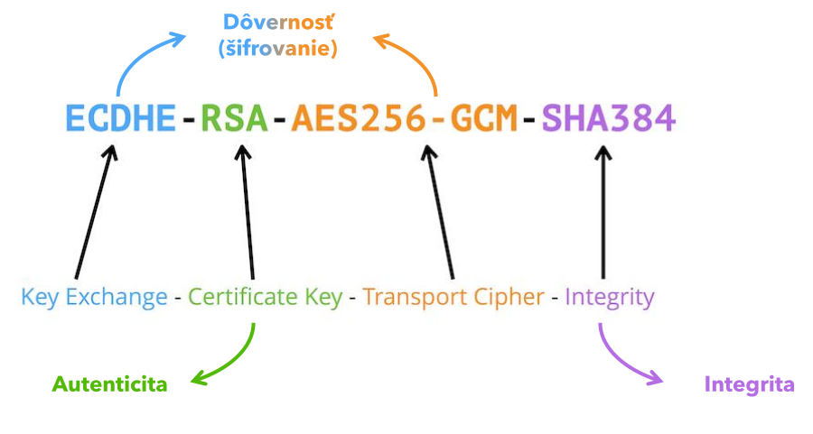
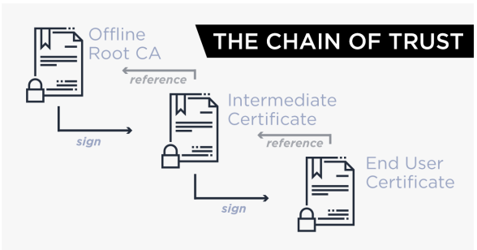
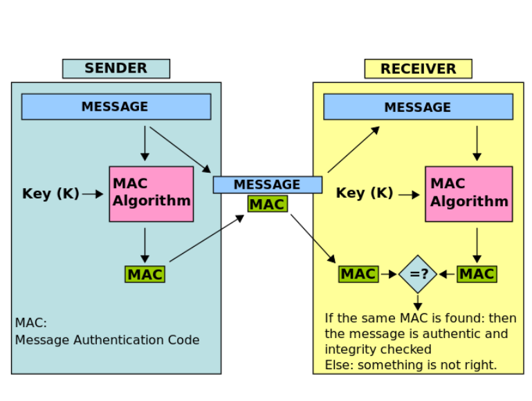

Šifrované spojenie medzi klientom a serverom
Internet stále využíva množstvo protokolov, ktoré boli vytvorené pred desiatkami rokov, a preto veľa z nich funguje na plain-text prenose. Dnes je však potrebné mať zabezpečený prenos dát, aby nepovolané osoby nevideli, čo sa prenáša medzi klientom a serverom.
Komunikáciu je preto potrebné šifrovať.
Otázky na premýšľanie
- Ako funguje protokol HTTP?
- Aké množstvá dát používateľ prenáša cez protokol HTTP?
- Akú kryptografiu použiť, ak chcem zašifrovať HTTP prenos – symetrickú alebo asymetrickú?
- Ako sa vyhnúť tomu, aby sme museli významne meniť správanie protokolu HTTP, ale mohli ho zároveň šifrovať?
Zabezpečený prenos dát
- Mnoho starších internetových protokolov funguje na plain-text prenose, teda prenose čitateľného textu.
- Ak sa komunikácia nešifruje, môže ju zachytiť a prečítať nepovolaná osoba.
- Riešením je šifrovanie komunikácie medzi serverom a klientom.
Ako tieto protokoly komunikujú šifrovane?
- Riešením nie je prerábať každý aplikačný protokol zvlášť.
- Namiesto toho sa použije „podkladový“ protokol, ktorý komunikáciu zašifruje.
- Týmto protokolom je TLS (Transport Layer Security), ktorý funguje na relačnej vrstve ISO OSI modelu.
Úlohy TLS:
- Zabezpečenie dôvernosti – dohodnúť metódu šifrovania a šifrovací kľúč.
- Zabezpečenie integrity – dohodnúť metódu overovania prijatia úplných a po ceste nezmenených informácií.
- Zabezpečenie autenticity – overiť, že server je naozaj tým, za koho sa vydáva.
Cipher Suite – šifrovacia sada
Cipher Suite určuje, akým spôsobom sa bude riešiť výmena kľúčov, autentifikácia, samotné šifrovanie prenosu a overenie integrity komunikácie.

Cipher Suite pre TLS 1.0 – 1.2
| Časť | Príklady algoritmov |
|---|---|
| Key exchange | RSA, Diffie-Hellman, Diffie-Hellman Eph., ECDHE, SRP, PSK |
| Authentication | RSA, DSA, ECDSA |
| Transport Cipher | RC4, 3DES, AES, IDEA, DES, Camellia, ChaCha20 |
| Integrity | MD5, SHA |
Symetrické alebo asymetrické šifrovanie?
- Symetrické šifry sú rýchle a spoľahlivé, ale majú nevýhodu v tom, že obe strany musia poznať rovnaký šifrovací kľúč.
- Asymetrické šifry tento problém riešia, ale sú výpočtovo náročnejšie a potrebujú viac CPU výkonu.
- Riešením je použiť asymetrické šifrovanie len na bezpečné odovzdanie symetrického kľúča a ďalšiu komunikáciu šifrovať symetricky.
Čím šifrujem pri asymetrickej kryptografii?
- Ak chcem niečo zašifrovať pri asymetrickej kryptografii, musím použiť verejný kľúč adresáta.
- Problém je v tom, ako môžem dôverovať serveru, že je naozaj tým, za koho sa vydáva.
- Riešením je elektronicky podpísať verejný kľúč servera podpisom dôveryhodnej certifikačnej autority.
Prosím? Podpísať? Ako?
- Server si najprv vygeneruje kľúčový pár – verejný a súkromný kľúč.
- Aby mu klienti mohli dôverovať, musí verejný kľúč odoslať na overenie a podpísanie certifikačnej autorite.
- Certifikačná autorita overí údaje o vlastníkovi verejného kľúča a vydá certifikát verejného kľúča servera, teda SSL certifikát.
- V certifikáte sú uvedené údaje vlastníka, verejný kľúč, hash kľúča, platnosť certifikátu a ďalšie informácie.
Self-signed vs. Let’s Encrypt vs. komerčný
| Typ certifikátu | Charakteristika |
|---|---|
| Self-signed | Žiadne overenie, certifikát si držiteľ podpisuje sám, je zadarmo, ale prehliadače ukazujú varovanie. |
| Let’s Encrypt | Overuje len doménu, certifikát je podpísaný dôveryhodnou CA, je zadarmo a má platnosť 3 mesiace s automatickým obnovením. |
| Komerčný | Overuje doménu aj organizáciu, je platený, podporovaný v prehliadačoch a platnosť býva 1 alebo 2 roky. |
Ako môžem veriť, že CA je dôveryhodná?
- Certifikačné autority sú spoločnosti, do ktorých ľudia vkladajú dôveru a za certifikát im platia.
- Aj certifikačné autority majú svoj certifikát podpísaný dôveryhodnou koreňovou certifikačnou autoritou.
- Dôveryhodné koreňové CA sú firmy, ktorým veria výrobcovia operačných systémov a internetových prehliadačov.
- Ich certifikáty sú priamo implementované v softvéri, napríklad v prehliadači alebo operačnom systéme.
Chain of trust – reťazec dôvery
- Reťazec dôvery znamená, že certifikát servera je podpísaný vyššou autoritou.
- Táto autorita je podpísaná ďalšou dôveryhodnou autoritou, až sa dostaneme ku koreňovej CA.
- Ak prehliadač dôveruje koreňovej autorite, vie dôverovať aj certifikátu servera v tomto reťazci.

Čo ak prehliadač nedôveruje certifikátu?
- Prehliadač používateľa zobrazí bezpečnostné varovanie.
- Môže ísť napríklad o self-signed certifikát, neplatný certifikát alebo certifikát pre inú doménu.
- V takom prípade spojenie nie je považované za dôveryhodné.
Overenie integrity
- Integrita, teda neporušenosť správy, sa overuje pomocou tagu alebo HMAC (Hash Message Authentication Code).
- Do hash funkcie na strane odosielateľa vstupuje správa spolu s kľúčom na šifrovanie.
- Vypočítaný HMAC sa pripojí na koniec správy.
- Na strane prijímateľa sa overí, či sa vypočítaný HMAC zhoduje s prijatým.
- Ak sa nezhoduje, so správou sa po ceste manipulovalo alebo sa poškodila.

Transport Layer Security (TLS) protokol
- TLS je protokol relačnej vrstvy a je nezávislý od konkrétneho protokolu aplikačnej vrstvy.
- TLS klient a server dohodnú spojenie pomocou procedúry nazývanej handshake.
- Počas handshake si vymenia informácie o dôvernosti, integrite a autentickosti spojenia.
TLS handshake – základný priebeh
- Klient sa pripojí na server s povoleným TLS spojením, pri webe typicky cez HTTPS na porte 443.
- Klient pošle zoznam podporovaných šifier a hash funkcií.
- Server vyberie najsilnejšiu podporovanú šifru a hash funkciu a oznámi to klientovi.
- Server pošle klientovi digitálny certifikát s menom servera, dôveryhodnou CA a verejným kľúčom servera.
- Klient si ešte pred pokračovaním overí platnosť certifikátu.
- Klient zašifruje náhodné číslo verejným kľúčom servera a pošle ho serveru.
- Server toto číslo dešifruje svojím súkromným kľúčom.
- Z náhodného čísla obe strany vygenerujú kryptografické kľúče na šifrovanie a dešifrovanie ďalšej komunikácie.
Ako sa implementuje HTTPS na server?
- Vygenerovať kľúčový pár, teda verejný a súkromný kľúč, a pripraviť požiadavku na certifikáciu (CSR).
- Odoslať CSR certifikačnej autorite a požiadať o HTTPS certifikát.
- Prevziať podpísaný HTTPS certifikát a nakopírovať ho na webserver.
- Nainštalovať podporu HTTPS na webserveri, napríklad mod_ssl.
- Zapnúť HTTPS na serveri – povoliť port 443, otvoriť ho vo firewalle a nastaviť cesty k privátnemu kľúču a certifikátu.
- Nastaviť presmerovanie z portu 80 na port 443.
Zdroje:
počítačová bezpečnosť - 3. ročník
Šifrované spojenie medzi klientom a serverom – školská prezentácia.
Ikonky